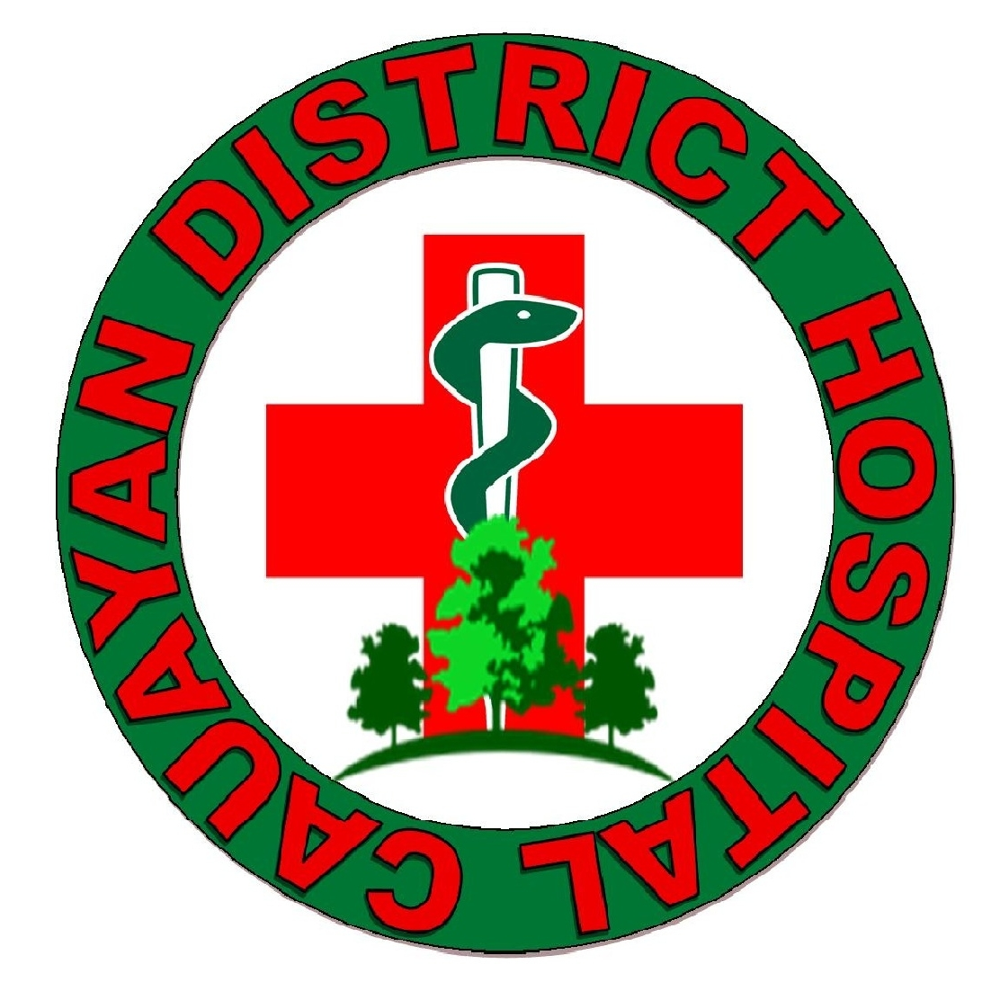
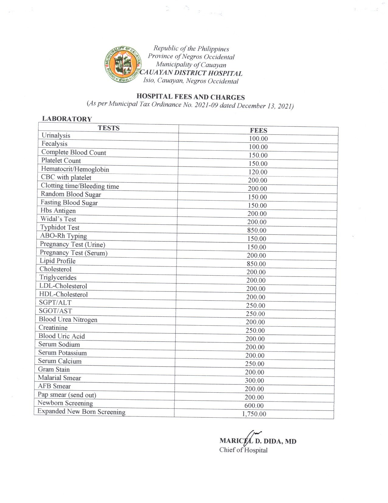
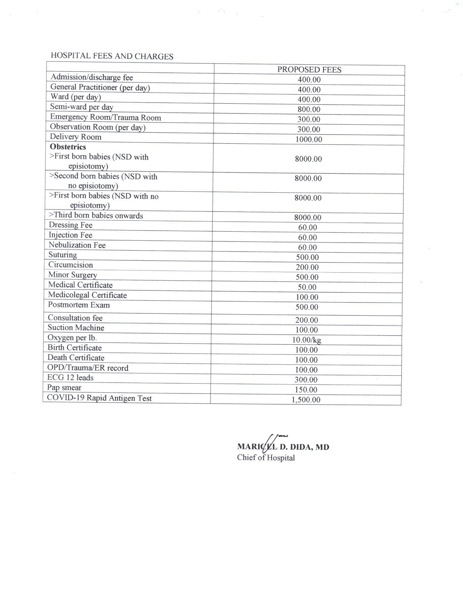
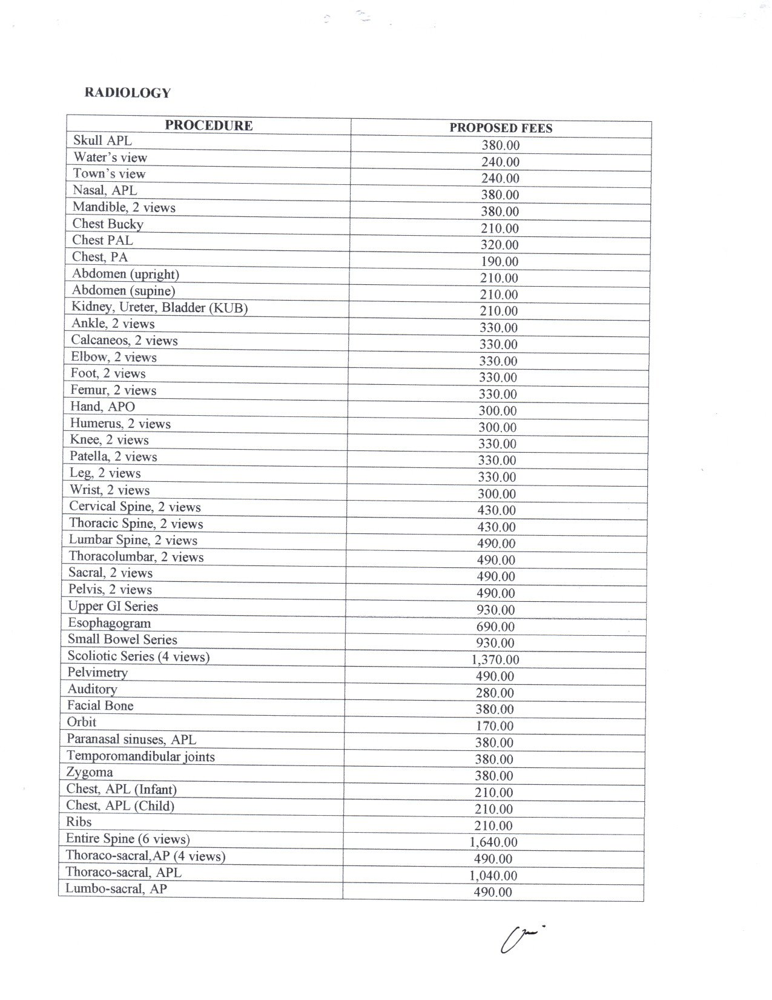
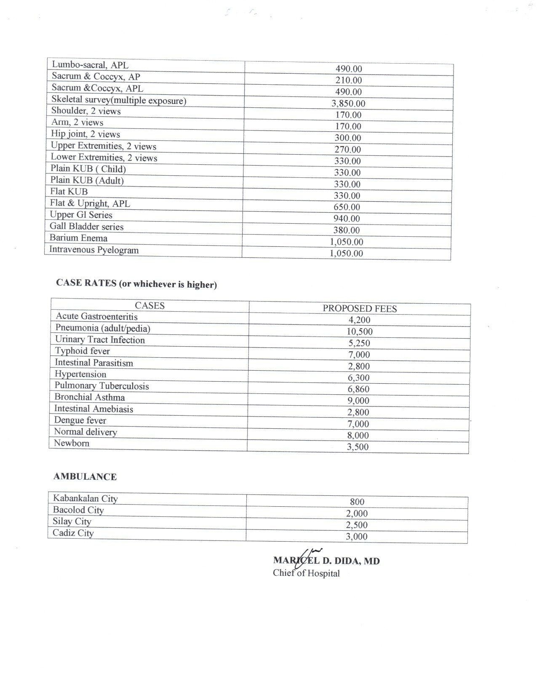

 Cauayan District Hospital
About Us
In May 1986, a 10 bed hospital was inaugurated in Barangay Isio, Cayauan, Negros Occidental, 117 kilometers South of Bacolod City. It was called ( CAUAYAN MUNICIPAL HOSPITAL ). It began to function In an out patient basis with 17 personnel . Seven (7) belonged to the Nursing Service Department. Five (5) belonged to the Administrative Staff and another Five (5) to the Medical Staff. Because of the ever increasing demand for health care services, the hospital, on April 1, 1987 started its 24-hour services. With loving heart and dedication, these 17 personnel, who were young, energetic and determined to do the job, proved to be the hospital priceless assets. Together with the unselfish support of the Cauayanons and the local officials, the hospital was able to cope up with the health needs of the populace to the fullest, eventhough drugs and medicines, supplies, instruments and equipments were very limited. When the performance of the hospital was assessed/ evaluated in August 1987, it got a high rating and was then given an order to function as a District Health Office with three (3) catchment Municipalties namely: Cauayan, Sipalay and Hinoba-an. Inspite of this great task and increased area of responsibility, no additional resources were made available for the hospital, in fact only two personnel was given, a Nurse and a Midwife. This however did not deter our commitment. Indeed we all worked hard and doubled our efforts to live up to the expectations. One personnel had to perform two or more functions with the same commitment and ideals- Basic Health Care Delivery. In March 6, 1992, through the untiring effort of Representative Hortensia L. Starke, Cauayan Municipal Hospital was upgraded to a 25-bed capacity hospital under Republic Act 7261 making it officially- CAUAYAN DISTRICT HOSPITAL. However, In April 1993 when the local Government Code was approved and implemented the upgrading of the hospital seemed to have been forgotten and burried into oblivion. Our budget became very limited, thereby curtailing the intense desire to improve and develop hospital structure and facilities. Yet, trained and honned to adopt to the ever changing bureaucracy of our government system, necessary adjustment as to inter/ intra linkages were successfully implemented. It took a long time for both the Provincial Government and the District Hospitals Administrators to adjust to the new scheme. There were projects that have been started previously by the national government which were not completed, because the Provincial Government cannot support it and most especially in the procurement of supplies, problems arise since hospital suffered the delayed in the procurement which resulted to shortage of supplies needed especially for emergency cases. Under the Provincial Government, Cauayan District Hospital is still classified as a 10 bed primary hospital which continue to serve the populace of Cauayan and the neiboring municipalities. The year nineteen Hundred and Ninety Six (1996) was considered as a lucky and juvial year for Cauayan District Hospital. Lucky in the sence that it started with a good relationship with the LGU, GO's and NGO's present in the locality. It's Staff were full of potentials which resulted to early promotions for two (2) Doctors. Their promotions make the hospital personnel happy and at the same time expectant of what will happen on the next Administration. Since the successor of the previous COH was already a member of the CDH Family, adjustment period for both the new administrator and the CDH Personnel was made easy. Communications were open and relationship was cordial. The nursing staff are well experienced in handling emergency cases and good at providing assessment on the patient's condition. They continnue to serve the people with compassion and commitment.
Hospital Fee's and Charges




Call :
0947 219 1474
Email :
cauayandistricthospital@gmail.com
Location:
Futon St. Brgy. Isio 6112 Cauayan, Philippines